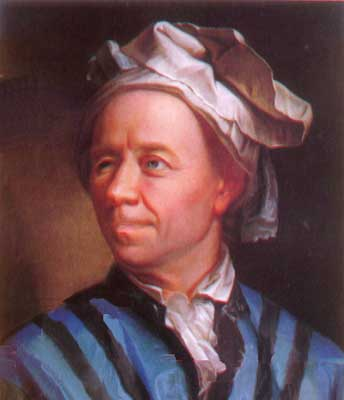

Katherine Johnson
¡Conoceme!
↻
Física, científica espacial y matemática estadounidense, contribuyó significativamente a la aeronáutica y los programas espaciales de EE.UU. Sus cálculos de la mecánica orbital fueron esenciales para el éxito de los primeros vuelos espaciales tripulados.
Carl Friedrich Gauss
¡Conoceme!
↻
Contribuyó significativamente en áreas como la teoría de números, el álgebra y el análisis.
Ruth Lawrence
¡Conoceme!
↻
Matemática canadiense que se graduó en la Universidad de Harvard a la edad de 10 años y es considerada una de las matemáticas más jóvenes en la historia.
Leonhard Euler
¡Conoceme!
↻

Prolífico matemático, desarrolló conceptos fundamentales en el cálculo, la teoría de grafos y la topología.